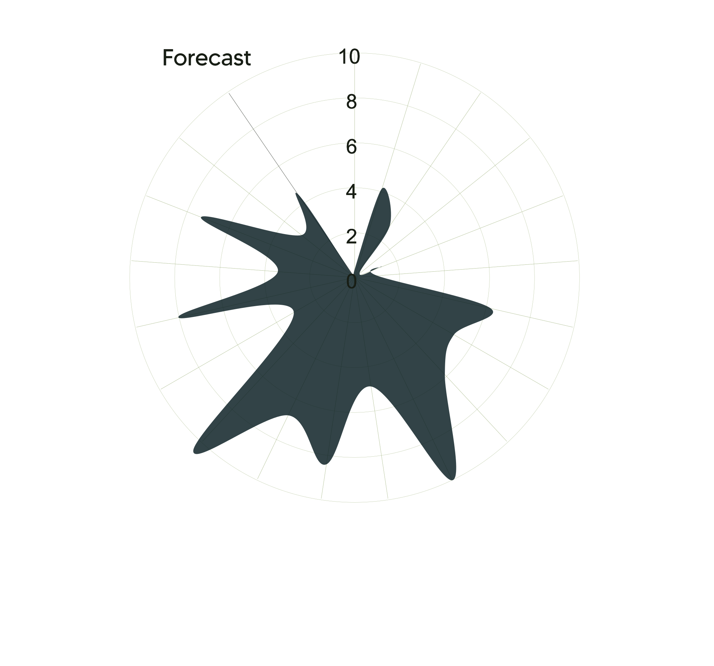

Erie Lake
=======



>>>>>>> 1acd9247ac5b706d419d9bd6c77dc47d2eb4f658
https://www.cleanwateraction.org/features/harmful-algal-outbreaks-and-drinking-water
http://beachapedia.org/Cyanobacteria
http://lakeeriealgae.com/
https://www.nationalgeographic.com/science/article/algae-bloom-lake-erie-toxins-spd
https://coastalscience.noaa.gov/news/lake-erie-hab-2020-bloom-severity-was-mild-as-predicted-by-seasonal-forecast/
http://beachapedia.org/Cyanobacteria
http://lakeeriealgae.com/
https://www.nationalgeographic.com/science/article/algae-bloom-lake-erie-toxins-spd
https://coastalscience.noaa.gov/news/lake-erie-hab-2020-bloom-severity-was-mild-as-predicted-by-seasonal-forecast/